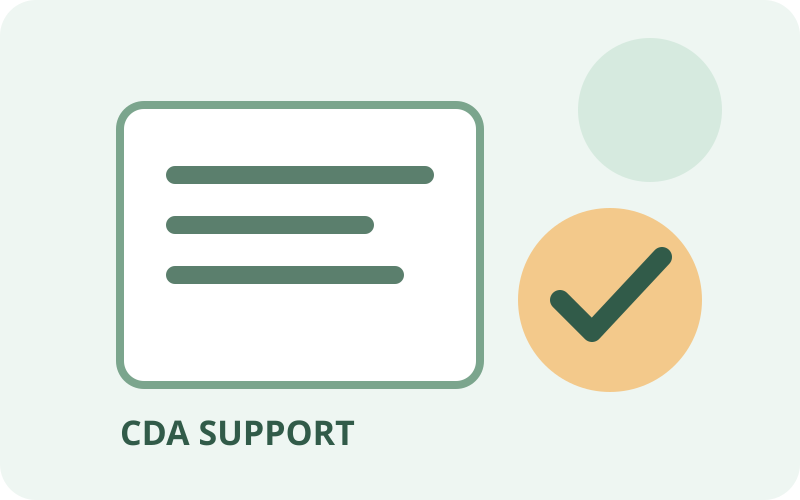
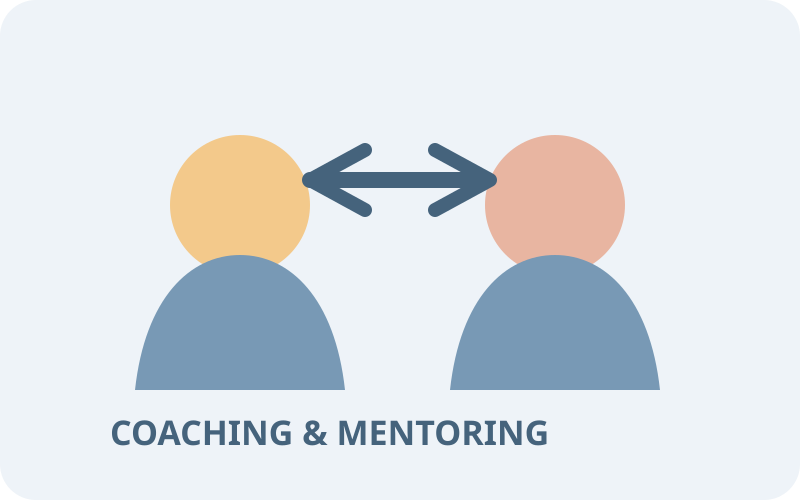
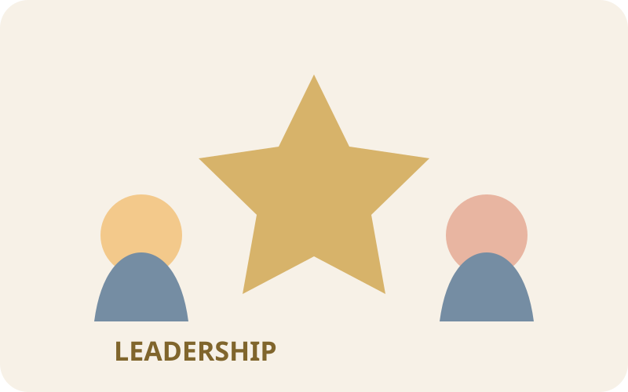
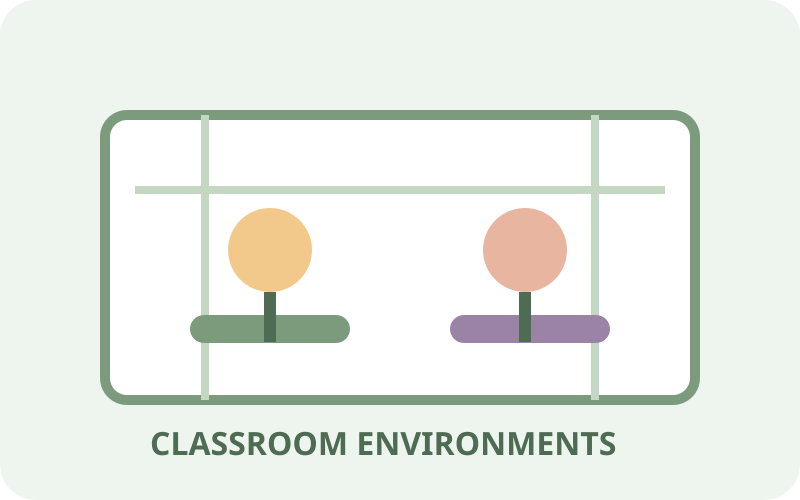
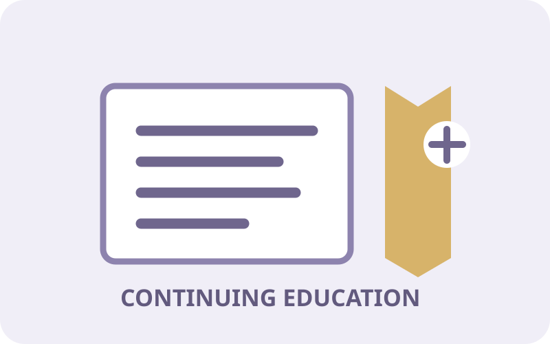
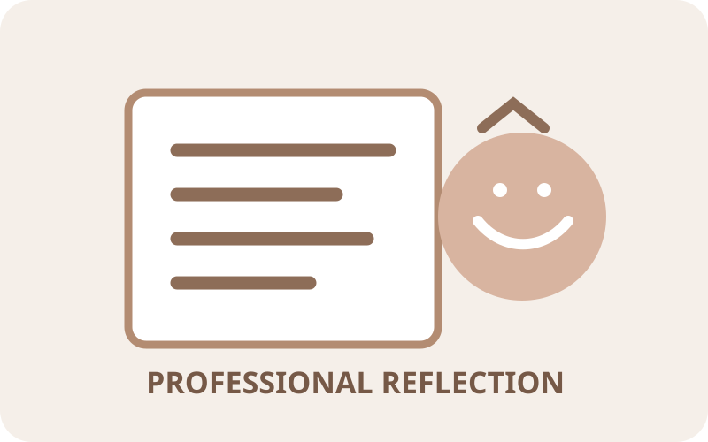

CDA Support
Guides, checklists, planning tools, and documentation support for educators working toward the Child Development Associate credential.
Explore CDA Support →Teacher growth, CDA support, coaching, leadership, classroom environments, and continuing education resources for early childhood educators.
Professional development is an ongoing part of becoming a stronger early childhood educator. These resources provide practical support for professional growth, classroom practice, leadership, coaching, credentials, and continuing education.
Explore practical resources designed to help early childhood educators strengthen their knowledge, skills, confidence, and classroom practice.

Guides, checklists, planning tools, and documentation support for educators working toward the Child Development Associate credential.
Explore CDA Support →
Strategies and frameworks for coaching, mentoring, professional reflection, feedback, and continuous improvement.
Explore Coaching →
Tools and resources that support team leadership, communication, collaboration, facilitation, and early childhood program leadership.
Explore Leadership →
Guidelines, setup ideas, reflection tools, and environment resources that promote learning, engagement, independence, and development.
Explore Environments →
Resources for ongoing professional learning, workshops, professional credits, and continuing education opportunities.
Explore Continuing Education →
Reflect on teaching practices, classroom experiences, professional strengths, challenges, goals, and future growth.
Explore Reflection Tools →Professional growth can take many forms. Use these pathways to identify areas for continued learning and development.
Strengthen your understanding of child development, curriculum, learning, and effective teaching practices.
Examine classroom experiences and identify strengths, challenges, questions, and opportunities for improvement.
Put professional learning into practice through classroom experiences, intentional teaching, and collaboration.
Set new goals, seek feedback, pursue professional learning, and continue building your expertise.
Professional development is more than completing training hours. It is an ongoing process of learning, reflecting, applying new knowledge, receiving feedback, and growing alongside the children and families we serve.